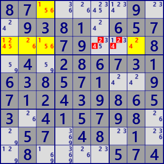
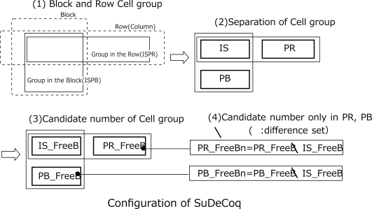
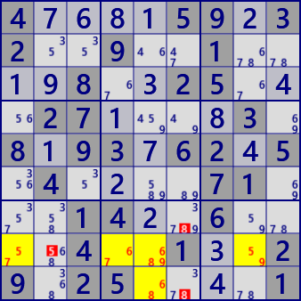
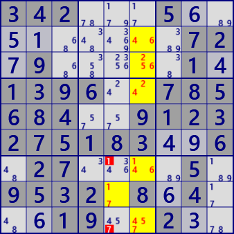
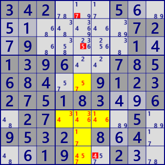
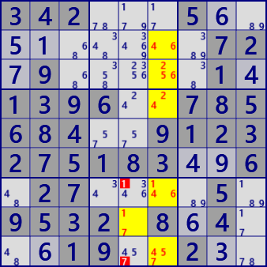
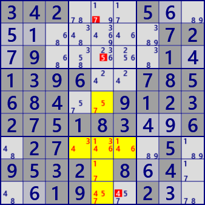

●SueDeCoq
SueDeCoqは、この手法を最初に提案した ハンドルネーム"SueDeCoq"に由来する解析アルゴリズムです。
SueDeCoqのアルゴリズムを理解するには、若干の飛躍が必要なので、例を用いて段階的に説明します。
なお、ここでの説明の多くは、次のHPを参考にしています。
http://hodoku.sourceforge.net/en/tech_misc.php#sdc
次の例は 基本的なSueDeCoqです。左図では、ブロック2のr2c46に着目します。
①この2セルには4候補数字#1789があり、同じブロックのr1c5には候補数字#78があります。
これらの3セルを合わせて考えると、r2c46の2セルには#19(78)が入ります(r2c46は#78の一方のみで、両方はない）。
②2行目について考えると、r2c9には候補数字#19があるので、着目するr2C46の2セルには#(19)78が入ることになります(r2c46は#19の一方のみで、両方はない）。
①と②を合わせると、着目するr2c46には#(19)(78)が入ることになり、r2c46は"2セルに2数字"のLockedとなっています。
ただし、2数字ペアのどちらかは決まっていません。
この状態で2行目のr2c3の#1はr2c9との関係で着目セルR2C46のLockedを壊す（r2c46に入る数字が足りなくなる）ので入れることは出来ません(r2c3=#1は偽)。
同様に、ブロック2のr1c4の#8は、r1c5との関係で着目セルr2c46のLockedを壊すので、入れることは出来ません(r1c4=#8は偽)。
右図では、ブロック1のr3c123に着目します。これらの3セルには5候補数字#12456があります。
左図と同様に考察すると、r3c123は#6(15)(24)でLockedとなっています（3セルに3数字）。
従ってr3c67の#24はこのLockedを壊すので(r3c123に入る数字が足りなくなる)、候補数字から除外できます。
ALS(block) : r1c5 r2c46 #1789
ALS(row) : r2c469 #1789)

SueDeCoq (ALS Level-1)
ALS(block) : r13c3 r3c12 #12456
ALS(row) : r3c1238 #12456)
.2...3..4.4....25.6...243.8256..8....8..9..2....2..4868.463...2.63....4.9..7...6.
87........9.81.65....79...8.....67316..5.1..97124.....3...57....57.48.1........74
以上の具体例を参考に、SueDeCoqのLockedを定義します。次図はここに登場するセル群の構成です。
①ブロック内のセル群(ISPB)と、行(または列）のセル群(ISPR)がある。
②2つのセル群は、共通部分(IS)とその他の部分(PBとPR)に分解する。
③分解したセル群にはそれぞれ候補数字(IS_FreeB、PB_FreeB、PR_FreeB)をもつとする。
④共通部分に対し、その他の部分(PBとPR)のみにある候補数字をPB_FreeBn、PR_FreeBnとする。
(PB_FreeBn= PB_FreeB\IS_FreeB、PR_FreeBn= PR_FreeB\IS_FreeB \：差集合)
⑤その他部分のみにある候補数字の数をNとする(N=|PB_FreeBn|+|PR_FreeBn|)。

これらの定義を用いて、SueDeCoqの解析アルゴリズムはつぎのようになります。
[1]SueDeCoqが成立するためには、まずLockedが成立している必要があります。
- 共通部分ISのセル数は2または3。
- その他の部分(PB、PR)は空ではない。
- 共通部分とその他の部分(PBとPR)の全てに共通の候補はない。
- |IS|=|IS_FreeB|-（|PB|+|PR|-N） (|A|は集合Aの要素数）
先の例はN=0の場合です。PRとPBにある候補数字がISと共通であり、ISの候補数字の可能性がセル数に一致することを表します。
N=1のとき、ISにはない候補数字がPR(またはPB)に1つ加わりますが、同時にPR(PB)のセル数1つ増えます。 セル数の増加を独自候補数字の数(N=1)が調整することを表します。
以下、Nが順次増えた場合もセル数が対応して増え、Locked判定の条件となっています。
[2]Lockedが成立すると、あとは実際にLockedを壊すセル・候補数字を探します。
最初の例に当てはめると次のようです。
・共通部分のセル数=2に対し、候補数字は4ある。
・行の共通部分以外のセルには、共通部分と同じ候補数字が2個あり、共通部分の候補数字を1個分限定している。
・同様に、ブロックの共通部分以外のセルは、共通部分の候補数字を1個分限定している。
・その他部分独自の候補数字は、行、ブロックともにない（N=0）。
したがって、条件("2=4-1-1+0")は成立し、Lockedである。
多数のセルによるSueDeCoqの例を示します。
 



4....59.32..9..1....8..25...27....3.8.93.62.5.4....71...14..6....4..1..29.25....1
3..5..9...5.2..1.3...3195...8..3.2.45.......19.2.4..8...5423...6.4..1.3...3..8..7
342...5.........72.9.....1.1396..785684..9123275183..6.27....5.9532.8.4...19..2..
342...5.........72.9.....1.1396..785684..9123275183..6.27....5.9532.8.4...19..2..
○SueDeCoqの解析プログラム
SueDeCoqの解析プログラムです。
セル群の構成とアルゴリズムをそのまま表現したコードなので、理解しやすいでしょう。
一点だけ補足します。最初に1つのhouseに属するセル群を求めます。これには、新たなクラスを定義してもよいのですが、
ALS、ALS管理のクラスのサブクラス(ALS特有の機能を制限した単にセル群を扱うクラス）になるので、ALSクラス、ALS管理クラスを流用します。
ただし、セル数よりも候補数字が+n(≧1)多いセル群を求める機能を使います。"fALS。"は偽ALS(fakeAls)を表します。
public partial class ALSTechGen: AnalyzerBaseV2{
public bool SueDeCoq( ){
ALSLinkMan fALS=ALSMan;//(houseに属するセル群を扱うクラスとしてALSを利用)
if( fALS.ALS_Search(2)<=3 ) return false; //+1と+2のfakeALSを生成
foreach( var ISPB in fALS.ALSLst.Where(p=> p.tfx>=18 && p.Size>=3) ){//ブロックfALS選択
if( ISPB.rcbRow.BitCount()<=1 || ISPB.rcbCol.BitCount()<=1 ) continue; //ブロック枡は複数行・列
foreach( var ISPR in fALS.ALSLst.Where(p=> p.tfx<18 && p.Size>=3) ){ //行fALS選択
if( (ISPR.rcbBlk&ISPB.rcbBlk)==0 ) continue; //ブロックb0と交差あり
if( ISPR.rcbBlk.BitCount()<2 ) continue; //行(列)fALSは複数ブロック
//交差部のセル構成は同じか
if( (ISPB.B81&HouseCells[ISPR.tfx]) != (ISPR.B81&HouseCells[ISPB.tfx]) ) continue;
Bit81 IS = ISPB.B81&ISPR.B81; //◆交差部(Bit81表現)
if( IS.Count<2 ) continue; //交差部は2セル以上
if( (ISPR.B81-IS).Count==0 ) continue; //行(列)ALSに交差部以外の部分がある
Bit81 PB = ISPB.B81-IS; //(ISPBのIS外)
Bit81 PR = ISPR.B81-IS; //(ISPRのIS外)
int IS_FreeB = IS.AggregateFreeB(pBDL); //(交差部数字)
int PB_FreeB = PB.AggregateFreeB(pBDL); //(ISPBのIS外の数字)
int PR_FreeB = PR.AggregateFreeB(pBDL); //(ISPRのIS外の数字)
if( (IS_FreeB&PB_FreeB&PR_FreeB)>0 ) continue;
//A.DifSet(B)=A-B=A&(B^0x1FF)
int PB_FreeBn = PB_FreeB.DifSet(IS_FreeB); //ブロックの交差部に無い数字
int PR_FreeBn = PR_FreeB.DifSet(IS_FreeB); //行(列)の交差部に無い数字
int sdqNC = PB_FreeBn.BitCount()+PR_FreeBn.BitCount(); //交差部外確定の数字数
if( (IS_FreeB.BitCount()-IS.Count) != (PB.Count+PR.Count-sdqNC) ) continue;
int elmB = PB_FreeB | IS_FreeB.DifSet(PR_FreeB); //ブロックの除外数字
int elmR = PR_FreeB | IS_FreeB.DifSet(PB_FreeB); //行(列)の除外数字
if( elmB==0 && elmR==0 ) continue;
foreach( var P in _GetRestCells(ISPB,elmB) ){ P.CancelB|=P.FreeB&elmB; SolCode=2; }
foreach( var P in _GetRestCells(ISPR,elmR) ){ P.CancelB|=P.FreeB&elmR; SolCode=2; }
if(SolCode>0){//--- SueDeCoq fond -----
SolCode=2;
SuDoQueEx_SolResult( ISPB, ISPR );
if( ISPB.Level>=3 || ISPB.Level>=3 ) Console.WriteLine("Level-3");
if( !AnMan.SnapSaveGP(true) ) return true;
}
}
}
return false;
}
public IEnumerable<UCell> _GetRestCells( UALS ISP, int selB ){
return pBDL.IEGetCellInHouse(ISP.tfx,selB).Where(P=>!ISP.B81.IsHit(P.rc));
}
private void SuDoQueEx_SolResult( UALS ISPB, UALS ISPR ){
Result="SueDeCoq";
if( SolInfoDsp ){
ISPB.UCellLst.ForEach(P=> P.SetNoBBgColor(P.FreeB,AttCr,SolBkCr) );
ISPR.UCellLst.ForEach(P=> P.SetNoBBgColor(P.FreeB,AttCr,SolBkCr) );
string ptmp = "";
ISPB.UCellLst.ForEach(p=>{ ptmp+=" r"+(p.r+1)+"c" + (p.c+1); } );
string po = "\r Cells";
if( ISPB.Level==1 ) po += "(block) ";
else{ po += "-"+ISPB.Level+"(block)"; }
po += ": "+ISPB.ToStringRCN();
po += "\r Cells" + ((ISPR.Level==1)? "": "-2");
po += ((ISPR.tfx<9)? "(row)":"(col)");
po += ((ISPR.Level==1)? " ": " ");
po += ": "+ISPR.ToStringRCN();
ResultLong = "SueDeCoq"+po;
}
}
}